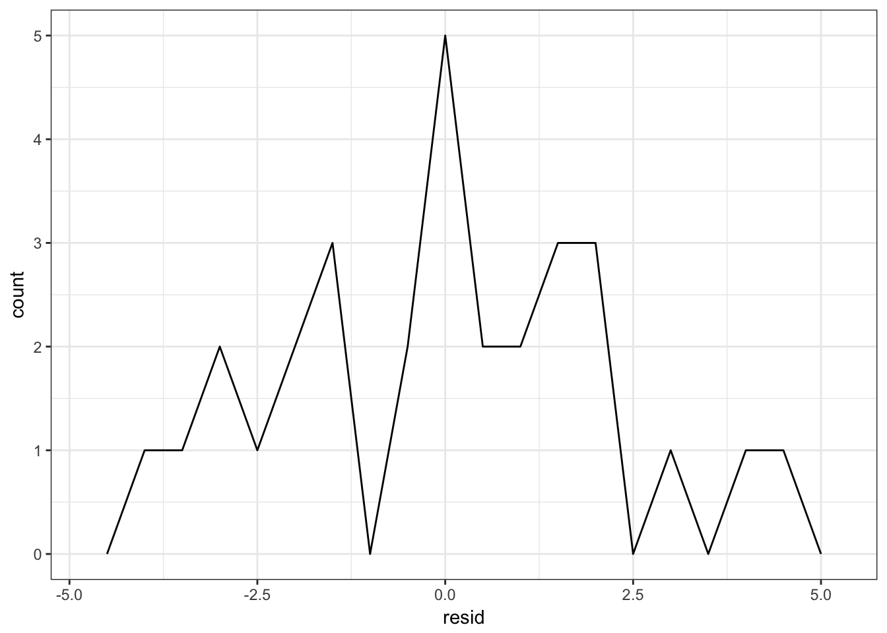

Statistical learning: linear regression
MACS 30100 - Perspectives on Computational Modeling
Objectives
- Introduce the functional form of linear regression
- Demonstrate how to estimate linear models using
lm() - Explain how to extract model statistics using
broom - Use the
modelrpackage to estimate predicted values and residuals
library(tidyverse)
library(modelr)
library(broom)
library(rcfss)
options(na.action = na.warn)
set.seed(1234)
theme_set(theme_bw())Linear models
Linear models are the simplest functional form to understand. They adopt a generic form
\[Y = \beta_0 + \beta_{1}X\]
where \(y\) is the outcome of interest, \(x\) is the explanatory or predictor variable, and \(\beta_0\) and \(\beta_1\) are parameters that vary to capture different patterns. In algebraic terms, \(\beta_0\) is the intercept and \(\beta_1\) the slope for the linear equation. Given the empirical values you have for \(x\) and \(y\), you generate a fitted model that finds the values for the parameters that best fit the data.
ggplot(sim1, aes(x, y)) +
geom_point()
This looks like a linear relationship. We could randomly generate parameters for the formula \(y = \beta_0 + \beta_1 * x\) to try and explain or predict the relationship between \(x\) and \(y\):
models <- tibble(
a1 = runif(250, -20, 40),
a2 = runif(250, -5, 5)
)
ggplot(sim1, aes(x, y)) +
geom_abline(aes(intercept = a1, slope = a2), data = models, alpha = 1/4) +
geom_point()
But obviously some parameters are better than others. We need a definition that can be used to differentiate good parameters from bad parameters.
Least squares regression
One approach widely used is called least squares - it means that the overall solution minimizes the sum of the squares of the errors made in the results of every single equation. The errors are simply the difference between the actual values for \(y\) and the predicted values for \(\hat{y}\) (also known as the residuals).
dist1 <- sim1 %>%
mutate(
dodge = rep(c(-1, 0, 1) / 20, 10),
x1 = x + dodge,
pred = 7 + x1 * 1.5
)
ggplot(dist1, aes(x1, y)) +
geom_abline(intercept = 7, slope = 1.5, color = "grey40") +
geom_point(color = "grey40") +
geom_linerange(aes(ymin = y, ymax = pred), color = "#3366FF")
To estimate a linear regression model in R, we use the lm() function. The lm() function takes two parameters. The first is a formula specifying the equation to be estimated (lm() translates y ~ x into \(y = \beta_0 + \beta_1 * x\)). The second is the data frame containing the variables:
sim1_mod <- lm(y ~ x, data = sim1)We can use the summary() function to examine key model components, including parameter estimates, standard errors, and model goodness-of-fit statistics.
summary(sim1_mod)##
## Call:
## lm(formula = y ~ x, data = sim1)
##
## Residuals:
## Min 1Q Median 3Q Max
## -4.1469 -1.5197 0.1331 1.4670 4.6516
##
## Coefficients:
## Estimate Std. Error t value Pr(>|t|)
## (Intercept) 4.2208 0.8688 4.858 4.09e-05 ***
## x 2.0515 0.1400 14.651 1.17e-14 ***
## ---
## Signif. codes: 0 '***' 0.001 '**' 0.01 '*' 0.05 '.' 0.1 ' ' 1
##
## Residual standard error: 2.203 on 28 degrees of freedom
## Multiple R-squared: 0.8846, Adjusted R-squared: 0.8805
## F-statistic: 214.7 on 1 and 28 DF, p-value: 1.173e-14The resulting line from this regression model looks like:
dist2 <- sim1 %>%
add_predictions(sim1_mod) %>%
mutate(
dodge = rep(c(-1, 0, 1) / 20, 10),
x1 = x + dodge
)
ggplot(dist2, aes(x1, y)) +
geom_smooth(method = "lm", color = "grey40") +
geom_point(color = "grey40") +
geom_linerange(aes(ymin = y, ymax = pred), color = "#3366FF")
Generating predicted values
We can use sim1_mod to generate predicted values, or the expected value for \(Y\) given our knowledge of hypothetical observations with values for \(X\), based on the estimated parameters using the data_grid() and add_predictions() functions from the modelr package. data_grid() generates an evenly spaced grid of data points covering the region where observed data lies. The first argument is a data frame, and subsequent arguments identify unique columns and generates all possible combinations.
grid <- sim1 %>%
data_grid(x)
grid## # A tibble: 10 × 1
## x
## <int>
## 1 1
## 2 2
## 3 3
## 4 4
## 5 5
## 6 6
## 7 7
## 8 8
## 9 9
## 10 10add_predictions() takes a data frame and a model, and uses the model to generate predictions for each observation in the data frame.
grid <- grid %>%
add_predictions(sim1_mod)
grid## # A tibble: 10 × 2
## x pred
## <int> <dbl>
## 1 1 6.272355
## 2 2 8.323888
## 3 3 10.375421
## 4 4 12.426954
## 5 5 14.478487
## 6 6 16.530020
## 7 7 18.581553
## 8 8 20.633087
## 9 9 22.684620
## 10 10 24.736153Using this information, we can draw the best-fit line without using geom_smooth(), and instead build it directly from the predicted values.
ggplot(sim1, aes(x)) +
geom_point(aes(y = y)) +
geom_line(aes(y = pred), data = grid, color = "red", size = 1)
This looks like the line from before, but without the confidence interval. This is a bit more involved of a process, but it can work with any type of model you create - not just very basic, linear models.
Generating residuals
We can also calculate the residuals, or the distance between the actual and predicted values of \(Y\), using add_residuals():
sim1 <- sim1 %>%
add_residuals(sim1_mod)
sim1## # A tibble: 30 × 3
## x y resid
## <int> <dbl> <dbl>
## 1 1 4.199913 -2.072442018
## 2 1 7.510634 1.238279125
## 3 1 2.125473 -4.146882207
## 4 2 8.988857 0.664969362
## 5 2 10.243105 1.919217378
## 6 2 11.296823 2.972935148
## 7 3 7.356365 -3.019056466
## 8 3 10.505349 0.129928252
## 9 3 10.511601 0.136179642
## 10 4 12.434589 0.007634878
## # ... with 20 more rowsggplot(sim1, aes(resid)) +
geom_freqpoly(binwidth = 0.5)
Reviewing your residuals can be helpful. Sometimes your model is better at predicting some types of observations better than others. This could help you isolate further patterns and improve the predictive accuracy of your model.
Session Info
devtools::session_info()## setting value
## version R version 3.3.2 (2016-10-31)
## system x86_64, darwin13.4.0
## ui X11
## language (EN)
## collate en_US.UTF-8
## tz America/Chicago
## date 2017-02-07
##
## package * version date source
## assertthat 0.1 2013-12-06 CRAN (R 3.3.0)
## backports 1.0.5 2017-01-18 CRAN (R 3.3.2)
## broom * 0.4.1 2016-06-24 CRAN (R 3.3.0)
## codetools 0.2-15 2016-10-05 CRAN (R 3.3.2)
## colorspace 1.3-2 2016-12-14 CRAN (R 3.3.2)
## DBI 0.5-1 2016-09-10 CRAN (R 3.3.0)
## devtools 1.12.0 2016-06-24 CRAN (R 3.3.0)
## digest 0.6.12 2017-01-27 CRAN (R 3.3.2)
## dplyr * 0.5.0 2016-06-24 CRAN (R 3.3.0)
## evaluate 0.10 2016-10-11 CRAN (R 3.3.0)
## forcats 0.2.0 2017-01-23 CRAN (R 3.3.2)
## foreign 0.8-67 2016-09-13 CRAN (R 3.3.2)
## ggplot2 * 2.2.1 2016-12-30 CRAN (R 3.3.2)
## gtable 0.2.0 2016-02-26 CRAN (R 3.3.0)
## haven 1.0.0 2016-09-23 cran (@1.0.0)
## hms 0.3 2016-11-22 CRAN (R 3.3.2)
## htmltools 0.3.5 2016-03-21 CRAN (R 3.3.0)
## httr 1.2.1 2016-07-03 CRAN (R 3.3.0)
## jsonlite 1.2 2016-12-31 CRAN (R 3.3.2)
## knitr 1.15.1 2016-11-22 cran (@1.15.1)
## labeling 0.3 2014-08-23 CRAN (R 3.3.0)
## lattice 0.20-34 2016-09-06 CRAN (R 3.3.2)
## lazyeval 0.2.0 2016-06-12 CRAN (R 3.3.0)
## lubridate 1.6.0 2016-09-13 CRAN (R 3.3.0)
## magrittr 1.5 2014-11-22 CRAN (R 3.3.0)
## memoise 1.0.0 2016-01-29 CRAN (R 3.3.0)
## mnormt 1.5-5 2016-10-15 CRAN (R 3.3.0)
## modelr * 0.0.0.9000 2017-02-02 local
## munsell 0.4.3 2016-02-13 CRAN (R 3.3.0)
## nlme 3.1-130 2017-01-24 CRAN (R 3.3.2)
## plyr 1.8.4 2016-06-08 CRAN (R 3.3.0)
## psych 1.6.12 2017-01-08 CRAN (R 3.3.2)
## purrr * 0.2.2 2016-06-18 CRAN (R 3.3.0)
## R6 2.2.0 2016-10-05 CRAN (R 3.3.0)
## rcfss * 0.1.3 2017-02-07 local
## Rcpp 0.12.9 2017-01-14 CRAN (R 3.3.2)
## readr * 1.0.0 2016-08-03 CRAN (R 3.3.0)
## readxl 0.1.1 2016-03-28 CRAN (R 3.3.0)
## reshape2 1.4.2 2016-10-22 CRAN (R 3.3.0)
## rmarkdown 1.3 2016-12-21 CRAN (R 3.3.2)
## rprojroot 1.2 2017-01-16 CRAN (R 3.3.2)
## rvest 0.3.2 2016-06-17 CRAN (R 3.3.0)
## scales 0.4.1 2016-11-09 CRAN (R 3.3.1)
## stringi 1.1.2 2016-10-01 CRAN (R 3.3.0)
## stringr 1.1.0 2016-08-19 cran (@1.1.0)
## tibble * 1.2 2016-08-26 cran (@1.2)
## tidyr * 0.6.1 2017-01-10 CRAN (R 3.3.2)
## tidyverse * 1.1.1 2017-01-27 CRAN (R 3.3.2)
## withr 1.0.2 2016-06-20 CRAN (R 3.3.0)
## xml2 1.1.1 2017-01-24 CRAN (R 3.3.2)
## yaml 2.1.14 2016-11-12 cran (@2.1.14)This work is licensed under the CC BY-NC 4.0 Creative Commons License.